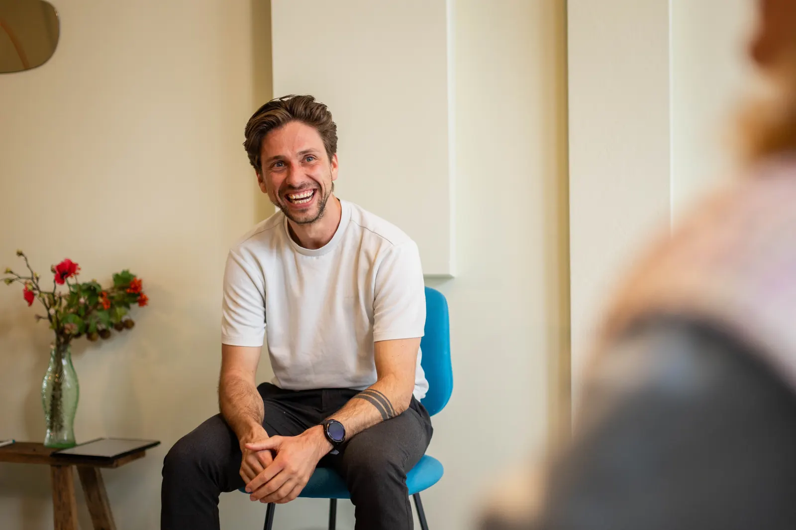
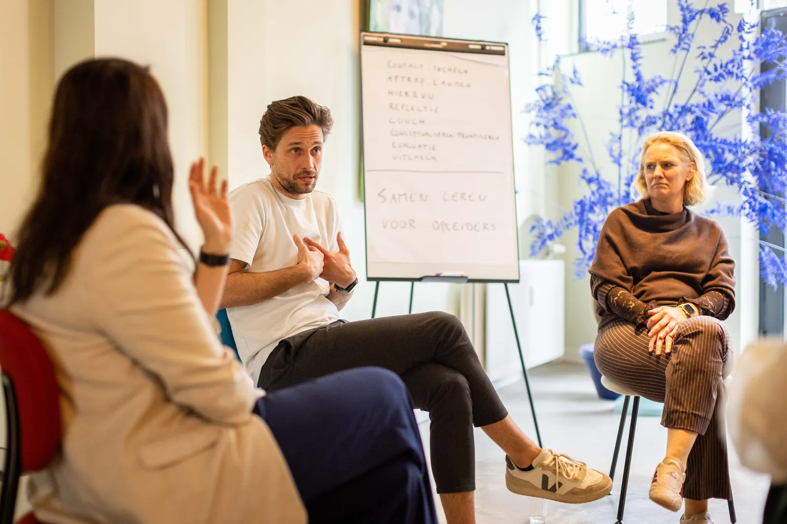
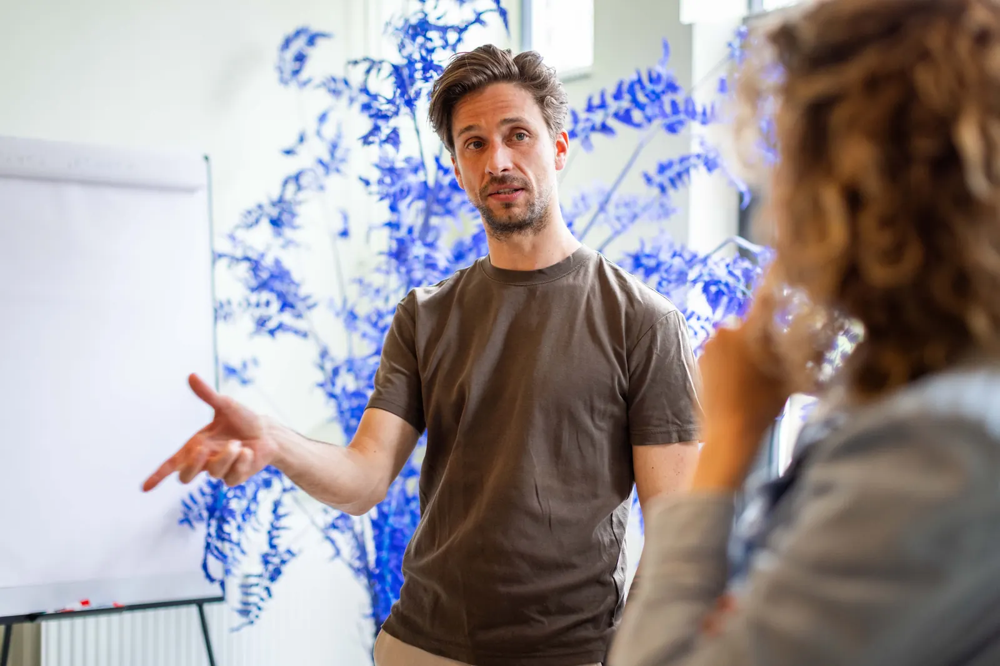
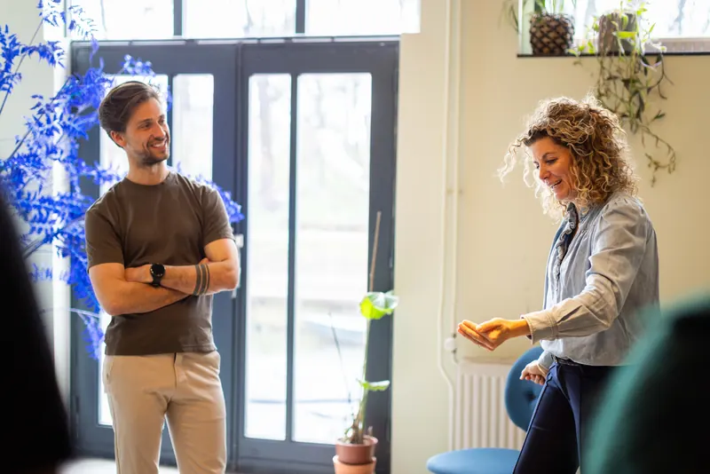
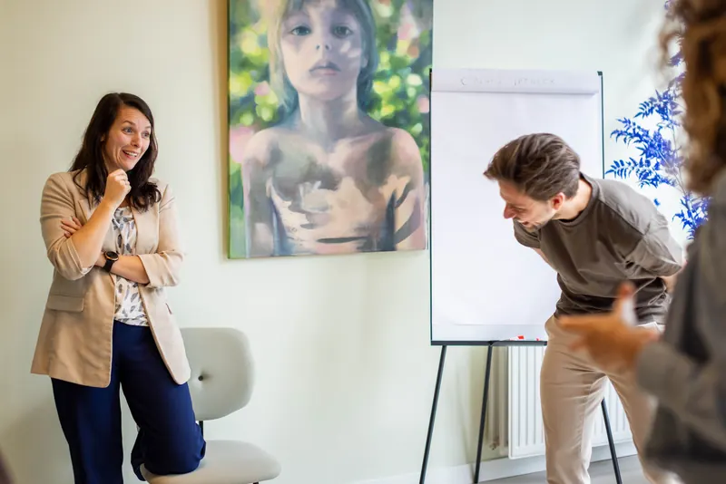
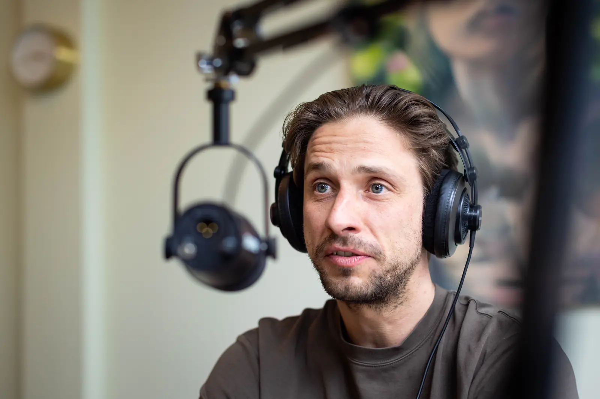

Jong talent dat blijft
Nieuwe medewerkers komen binnen met energie en ideeën. Wij zorgen dat hun ontwikkeling doorloopt en dat hun ideeën ergens landen. Zo vinden ze hun volgende stap bij jullie.
Een organisatie is voor ons een groep mensen die samen het werk doet: een complex sociaal systeem. Ontwikkeling begint daarom bij die mensen: bij wat er in ze omgaat en wat er tussen ze gebeurt. De organisatie ontwikkelt mee. Wij stappen daarvoor zelf in en staan naast je.
Bel +31 6 10582180
of mail info@enjonk.nl

Waar je ons voor belt
Wij werken voor organisaties die zich inzetten voor het publieke domein: gemeenten, waterschappen, zbo's, zorg en onderwijs, en bureaus die met hen meewerken.
Nieuwe medewerkers komen binnen met energie en ideeën. Wij zorgen dat hun ontwikkeling doorloopt en dat hun ideeën ergens landen. Zo vinden ze hun volgende stap bij jullie.
Of iemand blijft, wordt beslist in het contact met de leidinggevende. Wij helpen leidinggevenden het gesprek te voeren en er iets mee te doen. Dat merkt de medewerker in het jaargesprek en op de werkvloer.
Elke vertrekker en elke zieke maakt het werk zwaarder voor wie blijft. Wij werken met teams aan wat er tussen mensen gebeurt: elkaar aanspreken, verantwoordelijkheid pakken en samen dragen wat er ligt.
Wat anderen zeggen
Opdrachtgevers die ons opnieuw bellen, noemen onafhankelijk van elkaar dezelfde drie dingen.
Ze komen terug om de persoon.
Je krijgt vakmensen die zichzelf meenemen. Er zijn veel trainers met een trucje, een methodiek en veel ervaring; het verschil is dat hier echt het hart erin zit.
Eerlijkheid als onderscheid.
Ook als het spannend is, richting directie en richting team. En we zeggen nee als een vraag bij ons niet past. Opdrachtgevers noemen dat als reden om ons te kiezen.
Aanvoelen gaat voor een methode.
Op maat werken, mensen op hun gemak stellen en voelen dat de een nog niet zo ver is als de ander. Vaste methodieken en protocollen zijn als houvast losgelaten.
“Ik had een partner die zag wat er in de groep gebeurde én wat er in de organisatie omheen speelde. Als dat tweede het leren beïnvloedde, hoorde ik het en dachten we samen na. Het traineeship is daar ieder jaar beter van geworden.”

Wat we doen
Ons werk krijgt vorm in het gesprek met jou. In de praktijk lopen de drie niveaus vaak in elkaar over.
Voor medewerkers, professionals en leidinggevenden die een stap willen zetten. Traineeships, (persoonlijk) leiderschapstrajecten, intervisiegroepen en individuele coaching.
Voor teams die beter willen samenwerken en verantwoordelijkheid willen pakken. Teamcoaching en teamontwikkeling, gericht op wat er tussen mensen gebeurt en wat daar blijft liggen.
Voor directies en HR/L&O die aan ontwikkeling willen werken, passend bij een organisatie als complex sociaal systeem: van leerstrategie tot behoud en doorstroom van talent. Sparringpartner voor directie en MT.
Trajectlengtes
Drie bijeenkomsten
Een korte instap, waarin patronen zichtbaar worden en een volgende stap ontstaat.
Een half jaar
Trajecten waarin het geleerde meebeweegt met het werk zelf.
Tot twee jaar
Traineeships en jaartrajecten, van intake tot overdracht.
Wie één losse workshop zoekt, verwijzen we graag door.
Uit de praktijk
Bij meerdere organisaties draaien de jaartrajecten inmiddels voor de zevende keer of vaker. Een aantal daarvan is volledig overgedragen aan trainers uit de organisatie zelf.
Hoe wij naar ontwikkeling kijken
Mensen dragen van nature een drang tot ontwikkeling in zich, maar die ontwikkeling ontstaat pas in de interactie met anderen. Wij willen dat ontwikkelen in organisaties verschuift: van kennis zenden en competenties afvinken, naar leren vanuit ervaring, dialoog en het werk zelf.
De wereld is te complex om helemaal te snappen. Accepteer de complexiteit, hou vertrouwen en surf mee.
Vier waarden



De mensen van &Jonk
Eerlijk en stevig genoeg om naast je te blijven staan als het ingewikkeld wordt. We combineren vakkennis met gevoel voor humor en intuïtie, iedere keer afgestemd op jou, de groep en de situatie. We kennen elkaar en elkaars werk. Daardoor voelt een traject als één geheel, ook als er meerdere mensen op staan.
Eric Jonk is oprichter en eigenaar. Hij is geschoold in transactionele analyse en veranderkunde, werkt sinds 2014 in en rond de lokale overheid en begeleidt teams en professionals sinds 2016.
Meeluisteren
Elke twee weken: één gesprek, één concreet dilemma uit het werk met mensen en organisaties.

In Gesprek staat op Spotify en Apple Podcasts. Nieuwe afleveringen verschijnen automatisch ook hier op de site.